Chartless Maps
In French
Preamble
Chartless Maps, what the heck is that supposed to mean?!
What is that?
Here is where the idea comes from.
In the section dedicated to celestial navigation, we talk about those Mercator Canvases,
which are actually "empty" charts, used at sea to plot the positions required to come up with a celestial fix, on which
a nautical mile can be represented by a tangible segment. Those charts actually represent a small piece of ocean, at a given latitude, the
longitude being adjusted on demand. Good!
In the section The cheapest Nav Station,
you can see how to use a Raspberry Pi Zero and a cheap GPS to obtain your position, heading and speed, for a ridiculous energy consumption.
In nearby sections, you can also see how to put an AIS receiver to work.
The Raspberry Pi emits its own WiFi network, and hosts an HTTP server; this allows any device (cell-phone, tablet, laptop) to connect
on the Raspberry Pi's network, to access from a browser to several web pages, to visualise the data managed by the server.
This is not "Cloud Computing", more like "Flake Computing".
Here are a couple of examples of those web pages:
The list is not closed, your imagination is the limit!
This being said, about the boat's position, it would be nice to have a chart.
A tracker is expensive - more than a paper chart - and it also needs charts, updated, to purchase too...
Here is what could be done, with what we already have.
We could develop a component - fonctionally analog to a Mercator cavas, on which we could plot the boat's position.
The chart gives the boat's position, its heading, and the track recently followed.
This is where it begins to be interesting.
Before you leave, you prepare a file - known by the server (details coming), that can contain the positions of different markers
like becons, points..., so they can be displayed - just like the boat, using its position - on the chart.
It starts looking good, let's move on.
It is easy to calculate distances and bearings for all those marks we've defined:
And along the same lines, we can also define "borders", lines joining marks defined like before:
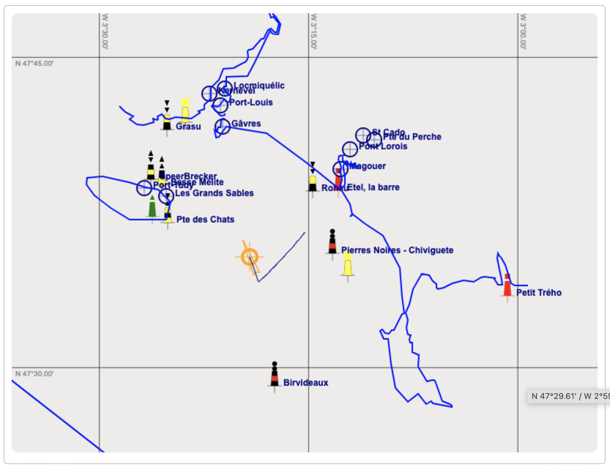
Still the same way, you can have files defining continents!
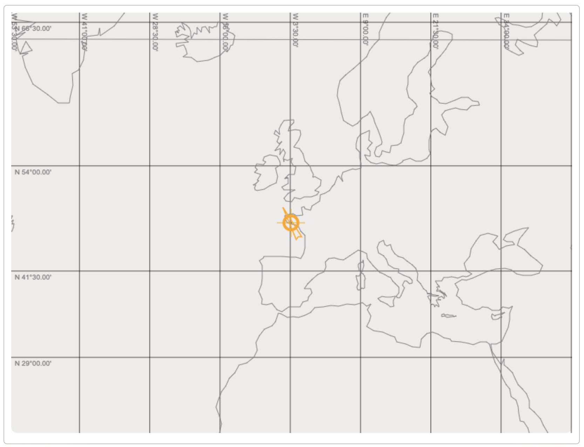
We talked before about AIS. AIS targets can be represented the same way:
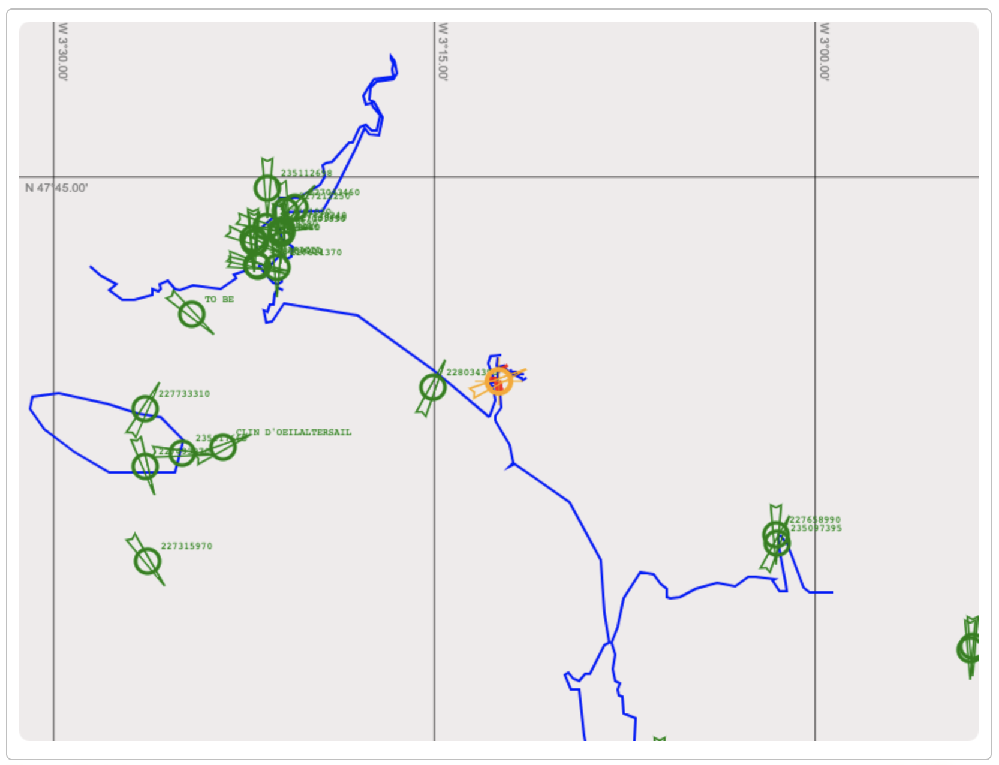
And also - as it is available - for all the elements above, we can detect collision threats. It can be with AIS targets, or with the borders we
have defined.
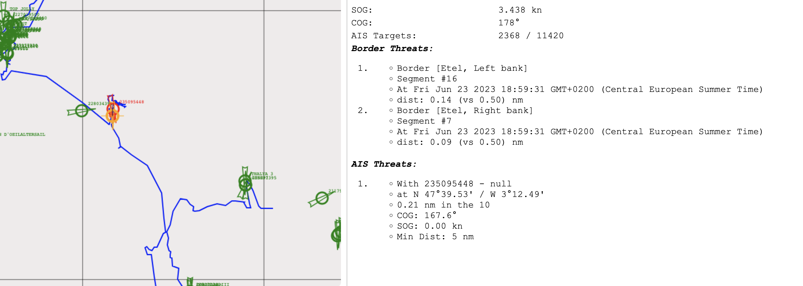
Actions to take in case of a collision threat can be defined too. We'll see later.
AIS targets collision threat detection
Here is how the collision threats are detected in the Java class AISManager.
We proceed in two steps:
- We detect the targets within a radius of X nm
-
For those targets:
- Starting from the position of the target, and the position of the boat (our boat)
- We calculate the distance between the two
- We calculate the positions reached 10 seconds later from their position, using their respective speed and heading
- We measure the new distance between boat and target
- As long as this distance keeps shrinking, we process this way, every 10 seconds
- We save this smallest distance found, we name it Y
- If this Y value is lower than a given value, we then considrer that there is a collision threat.
Sample values:
Note
We could also use a mathematically more rigourous method:
- You establish the equation of the distance between the boats, based on time, starting from their current position, using their speed and heading
- You derivate this function, once
- You find the roots of this first derivative, to get to the minimum of the function
This is indeed more rigourous, but the formula that gives us the position we can reach from a given position, with given speed and heading, within a given time,
is a bit tricky...
See
here.
Hence the chosen method described above, that will eventually be easier to debug, if needed. 😉
The code
All the required code is in its git repo, along with doc and examples.
© 2024, Passe-Coque


 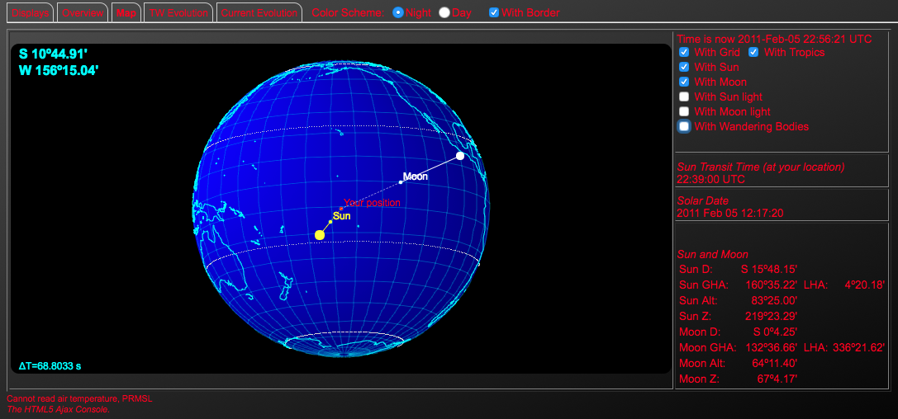
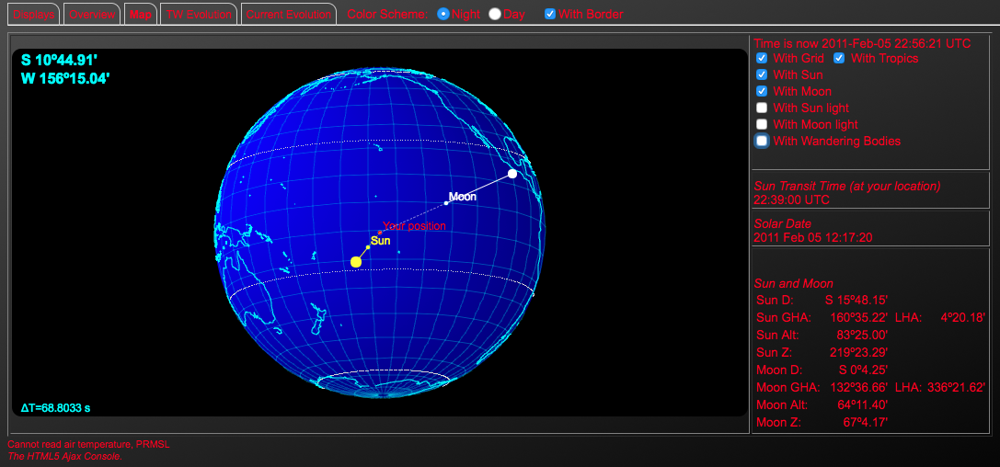


 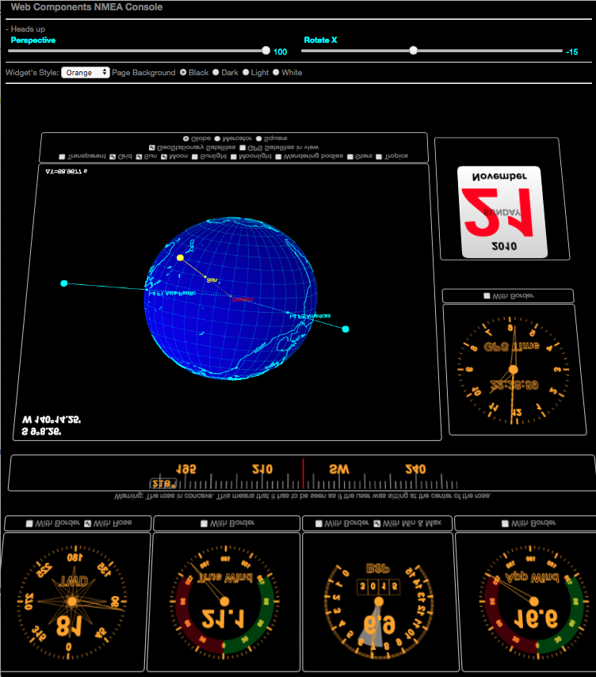
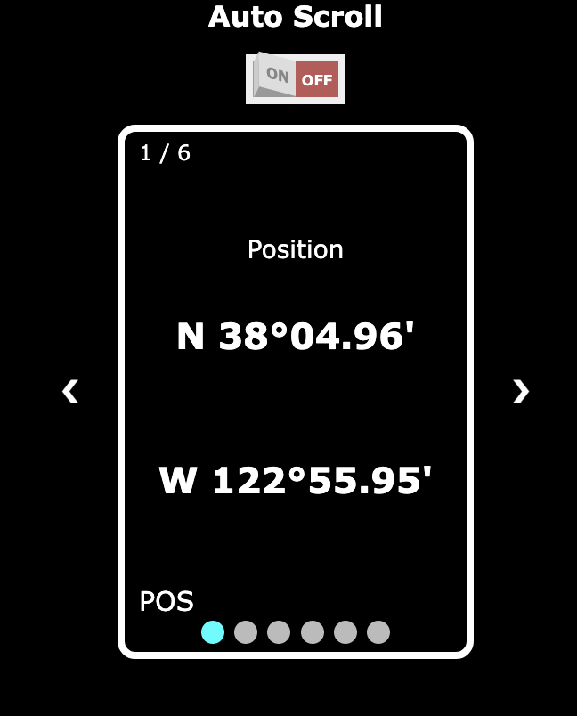
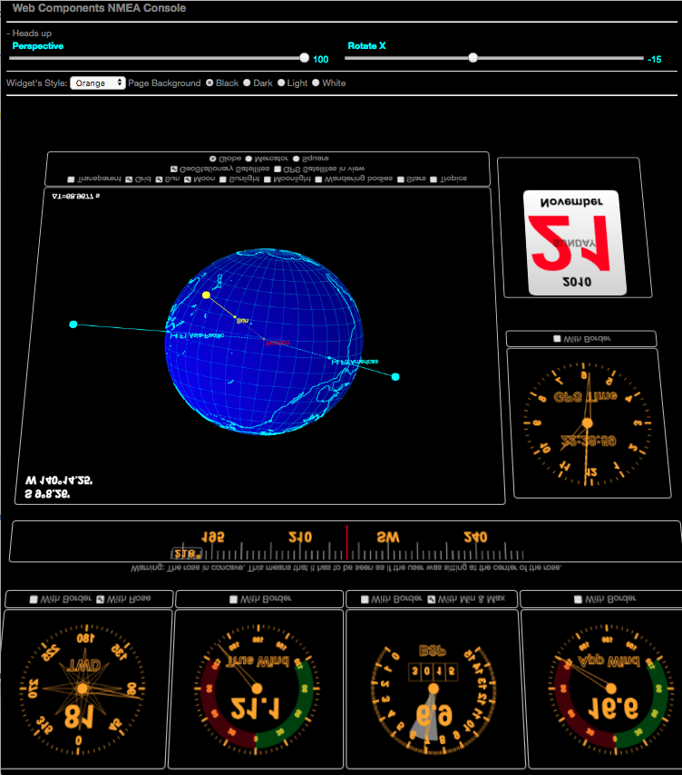
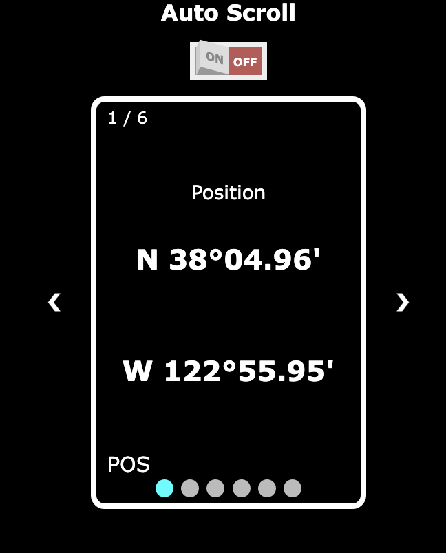
 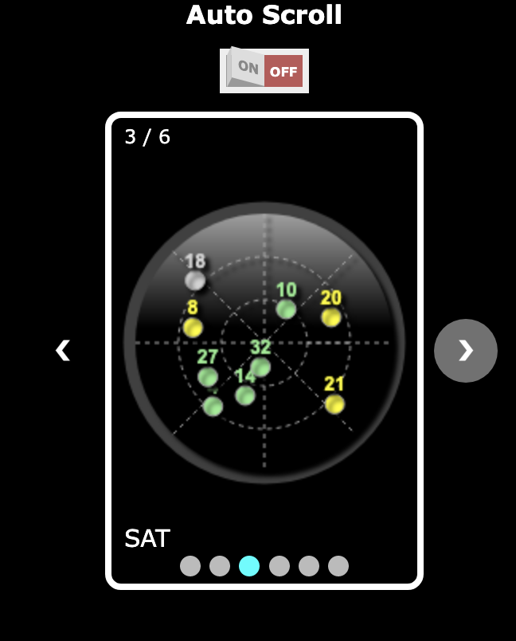
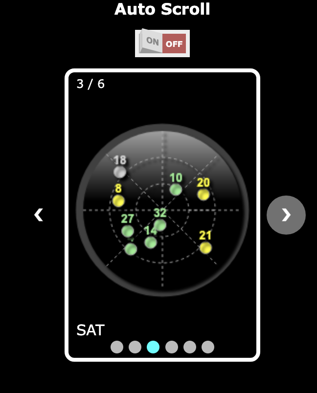